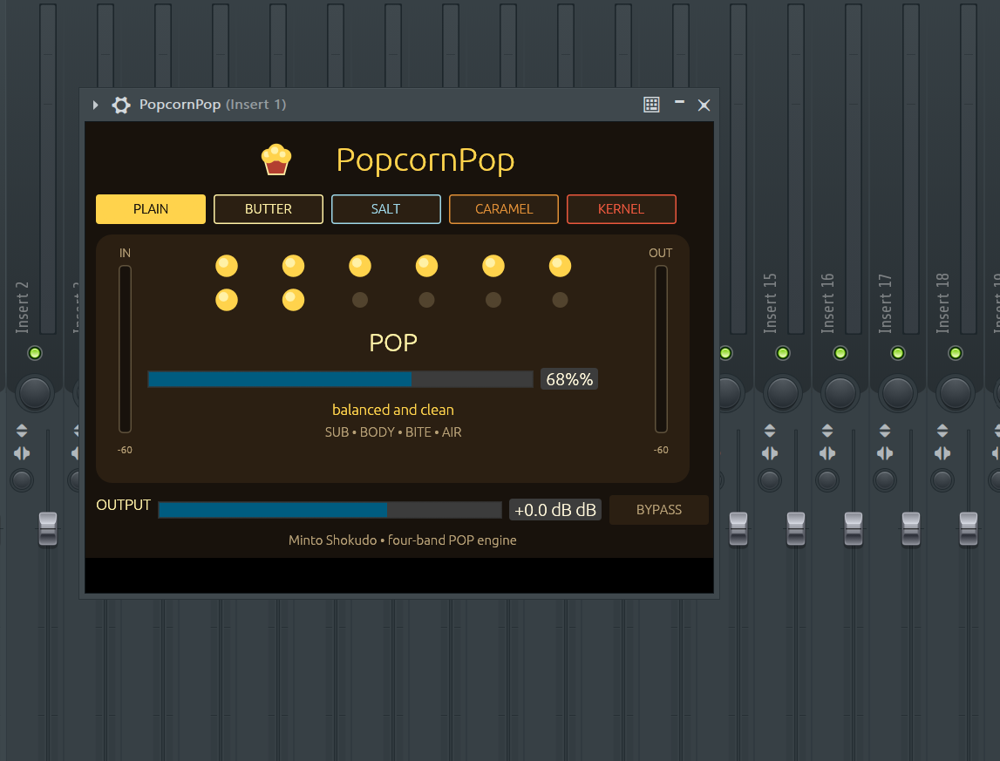

PopcornPop GUI · Running in FL Studio
味の決め手
Key FeaturesPOPマクロ一発
つまみ一つで粒立ち・密度・輪郭をまとめて立ち上げる。直感的な味付け操作。
全帯域に効く
低域から高域まで、まとまりを保ちながら自然に効く4つの味付けエリア。
トランジェント強調
音の立ち上がりをほどよく前に出して、弾ける感じを加える。
5つの味付けタイプ
PLAIN / BUTTER / SALT / CARAMEL / KERNEL。内部の効き方そのものを、味で選べる。
音量メーター
入り口と出口の音量を見ながら、かけ具合を調整できる。
音連動アニメ
トランジェントに合わせてポップコーンが弾ける、見て楽しい音響メーター。
味付けタイプ五種
Flavor Types🌽 PLAIN
バランス型。素材の味を活かす、最初の一杯。
🧈 BUTTER
低域・低中域の密度を上げる。ベース、キック、ボトムの厚みに。
🧂 SALT
中高域・高域のアタックを立てる。ハイハット、シンセリード、ボーカル前段に。
🍮 CARAMEL
中域を前に押し出す。ボーカル、ギター、メインリードの存在感に。
🌟 KERNEL
全帯域を強く弾けさせる。マスターバス、まとめ味付けに。
食べ方ガイド
Install & Usage動作環境
- Windows 10 / 11 x64
- VST3対応DAW（FL Studio / Cubase / Studio One / Reaper / Bitwig 等）
- 64-bitプラグインホスト
インストール
zipを展開すると PopcornPop.vst3 フォルダが出てくる。それを次の場所へコピー：
C:\Program Files\Common Files\VST3\
その後、DAW側でVST3プラグインを再スキャン。
FL Studioの場合は Plugin Manager から Find installed plugins を実行。
基本操作
POP── 粒立ち・密度・輪郭をまとめて調整するメインつまみOUTPUT── 最終出力音量（dB）BYPASS── 効果を一時的にオフ
POP 0% かつ OUTPUT 0 dB では、入力音をそのまま通します。
味付けタイプを選ぶと内部の効き方と推奨POP値が切り替わります。その後POPは自由に動かしてOK。
使用上のメモ
- 大きく効かせても音量が暴れにくい安全設計です。
- 強く掛ける際は OUTPUT で音量を揃え、BYPASS と比較してください。
- 無音や極小音を過剰に持ち上げない安全境界を内蔵しています。
同梱物
PopcornPop.vst3── プラグイン本体LICENSE.txt── ライセンスTHIRD_PARTY_NOTICES.txt── 第三者ライセンス全文QUICKSTART.md── 操作ガイドCHANGELOG.md── 変更履歴
Windows x64 · VST3